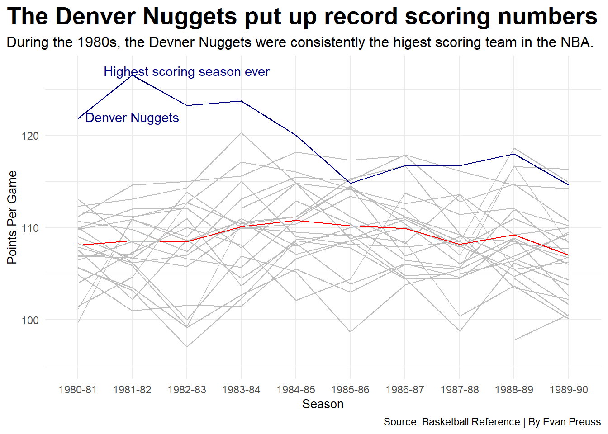

Code
library(tidyverse)
library(ggrepel)
library(ggtext)
library(ggalt)
library(gt)
teamstats <- read_csv("1980snba.csv")
oppstats <- read_csv("opposingstats.csv")
advstats <- read_csv("1980advanced.csv")
pace <- read_csv("nbapace.csv")
eighties <- teamstats |> inner_join(advstats, by=c("Season", "Team" )) |>
select(Season, Team, FG, FGA, `FG%`, `3P`, `3PA`, `3P%`, `2P`, `2PA`, `2P%`, FT, FTA, `FT%`, AST, TOV, PTS, W, L, ORtg, DRtg, NRtg, Pace, `TOV%`, `DefeFG%`) |>
mutate(Team =
case_when(
Team == "Kansas City Kings" ~ "Sacramento Kings",
Team == "San Diego Clippers" ~ "Los Angeles Clippers",
TRUE ~ Team )) |>
mutate(AstTovRatio = AST/TOV)
nuggets <- eighties |> filter(Team == "Denver Nuggets")
decadeavgs <- eighties |> group_by(Team) |> summarize(avgPTS = mean(PTS),
avgFG = mean(FG),
avgFGA = mean(FGA),
`avgFG%` = mean(`FG%`),
avg3P = mean(`3P`),
avg3PA = mean(`3PA`),
`avg3P%` = mean(`3P%`),
avg2P = mean(`2P`),
avg2PA = mean(`2PA`),
`avg2P%` = mean(`2P%`),
avgFT = mean(FT),
avgFTA = mean(FTA),
`avgFT%` = mean(`FT%`),
avgAST = mean(AST),
avgTOV = mean(TOV),
avgW = mean(W),
avgL = mean(L),
avgORtg= mean(ORtg),
avgDRtg = mean(DRtg),
avgPace = mean(Pace),
`avgTOV%` = mean(`TOV%`),
`avgDefFg%` = mean(`DefeFG%`)) |>
mutate(AstTovRatio = avgAST/avgTOV)
oppavgs <- oppstats |> mutate(Team =
case_when(
Team == "Kansas City Kings" ~ "Sacramento Kings",
Team == "San Diego Clippers" ~ "Los Angeles Clippers",
TRUE ~ Team )) |>
group_by(Team) |> summarize(oppavgPTS = mean(PTS),
oppavgFG = mean(FG),
oppavgFGA = mean(FGA),
`oppavgFG%` = mean(`FG%`),
oppavg3P = mean(`3P`),
oppavg3PA = mean(`3PA`),
`oppavg3P%` = mean(`3P%`),
oppavg2P = mean(`2P`),
oppavg2PA = mean(`2PA`),
`oppavg2P%` = mean(`2P%`),
oppavgFT = mean(FT),
oppavgFTA = mean(FTA),
`oppavgFT%` = mean(`FT%`),
oppavgAST = mean(AST),
oppavgTOV = mean(TOV)) |>
mutate(AstTovRatio = oppavgAST/oppavgTOV) |>
inner_join(decadeavgs, by=c("Team" ))
filterpace <- pace |> filter(SEASON == "1980-81" | SEASON == "1981-82" | SEASON == "1982-83" | SEASON == "1983-84" | SEASON == "1984-85" | SEASON == "1985-86" | SEASON == "1986-87" | SEASON == "1987-88" | SEASON == "1988-89" | SEASON == "1989-90"
) |>
rename(Season=SEASON, TotalPoints=PTS, PTS=PPG)
tableavgs <- oppavgs |>
filter(grepl("Magic", Team) == FALSE,
grepl("Hornets", Team) == FALSE,
grepl("Timberwolves", Team) == FALSE,
grepl("Heat", Team) == FALSE) |>
mutate(WinPercent = avgW/82) |>
select(Team, avgPTS, oppavgPTS, `avgFG%`, `oppavgFG%`, WinPercent) |>
arrange(desc(WinPercent)) |> top_n(10)
ggplot() +
geom_line(data=eighties, aes(x=Season, y=PTS, group=Team), color="grey") +
geom_line(data=nuggets, aes(x=Season, y=PTS, group=1), color="navy") +
geom_line(data=filterpace, aes(x=Season, y=PTS, group=1), color="red") +
geom_text(aes(x="1982-83", y=127, label= "Highest scoring season ever"), color="navy") +
geom_text(aes(x="1981-82", y=122, label="Denver Nuggets"), color="navy") +
theme_minimal() +
labs(
title = "The Denver Nuggets put up record scoring numbers",
subtitle ="During the 1980s, the Devner Nuggets were consistently the higest scoring team in the NBA.",
caption ="Source: Basketball Reference | By Evan Preuss"
) +
theme(plot.title = element_text(size = 20, face = "bold"), axis.title = element_text(size = 10),
plot.subtitle = element_text(size=12), plot.title.position = "plot") 